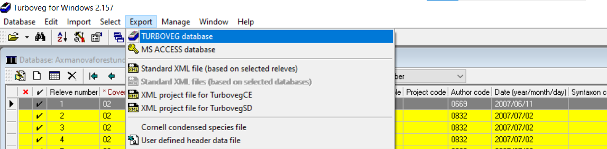

library(foreign) #for reading dbf files
library(tidyverse) #for data handling, pipes and visualisation
library(readxl) #for data import directly from Excel
library(janitor) #for unified, easy-to-handle format of variable namesTurboveg for R
Aim of this tutorial is to show you step by step how to import the data from Turboveg to R and prepare it for further analyses.
1.1 Turboveg data format
Turboveg for Windows is a program designed for the storage, selection, and export of vegetation plot data (relevés).The information is divided among several files that are matched by either species ID or releve ID. Within the Turboveg interface, you do not see this structure directly, but you can find it if you look in the Turbowin folder, subfolder data and particular database (see example below).

At some point you need to export the data and process them further. This can be done for example in a specialised software called JUICE, but also directly in R.

To get Turboveg data to R, you first need to export the Turboveg database to a folder where you want to process the data. This step requires selection of all the plots you want to export. Alternatively you can access the files directly in the main file in Turbowin, but just to warn you, if you do something wrong here, you might completely loose your data.
1.2 Load libraries
1.3 Import env file = headers
One option is to check the exported database manually, open the file called tvhabita.dbf in Excel and save it as tvhabita.xlsx or tvhabita.csv (UTF 8 encoded) file into your data folder. Although it includes one more step outside R, it is still rather straightforward and it saves you troubles with different formats in Turboveg and in R (encoding issues).
You can then import the file as Excel
env <- read_excel("data/tvhabita.xlsx")or from csv file, which is a slightly more universal option and we will use it for import of most of the files.
env <- read_csv("data/tvhabita.csv")Rows: 137 Columns: 84
── Column specification ────────────────────────────────────────────────────────
Delimiter: ","
chr (13): COUNTRY, COVERSCALE, AUTHOR, SYNTAXON, MOSS_IDENT, LICH_IDENT, REM...
dbl (45): RELEVE_NR, DATE, SURF_AREA, ALTITUDE, EXPOSITION, INCLINATIO, COV_...
lgl (26): REFERENCE, TABLE_NR, NR_IN_TAB, PROJECT, UTM, RESURVEY, FOR_EVA, R...
ℹ Use `spec()` to retrieve the full column specification for this data.
ℹ Specify the column types or set `show_col_types = FALSE` to quiet this message.If you check the imported names, they are rather difficult to handle.
names(env) [1] "RELEVE_NR" "COUNTRY" "REFERENCE" "TABLE_NR" "NR_IN_TAB"
[6] "COVERSCALE" "PROJECT" "AUTHOR" "DATE" "SYNTAXON"
[11] "SURF_AREA" "UTM" "ALTITUDE" "EXPOSITION" "INCLINATIO"
[16] "COV_TOTAL" "COV_TREES" "COV_SHRUBS" "COV_HERBS" "COV_MOSSES"
[21] "COV_LICHEN" "COV_ALGAE" "COV_LITTER" "COV_WATER" "COV_ROCK"
[26] "TREE_HIGH" "TREE_LOW" "SHRUB_HIGH" "SHRUB_LOW" "HERB_HIGH"
[31] "HERB_LOW" "HERB_MAX" "CRYPT_HIGH" "MOSS_IDENT" "LICH_IDENT"
[36] "REMARKS" "COORD_CODE" "SYNTAX_OLD" "RESURVEY" "FOR_EVA"
[41] "RS_PROJECT" "RS_SITE" "RS_PLOT" "RS_OBSERV" "PLOT_SHAPE"
[46] "MANIPULATE" "MANIPTYP" "LOC_METHOD" "DATA_OWNER" "EVA_ACCESS"
[51] "LONGITUDE" "LATITUDE" "PRECISION" "LOCALITY" "BIAS_MIN"
[56] "BIAS_GPS" "CEBA_GRID" "FIELD_NR" "HABITAT" "GEOLOGY"
[61] "SOIL" "WATER_PH" "S_PH_H2O" "S_PH_KCL" "S_PH_CACL2"
[66] "SOIL_PH" "CONDUCT" "NR_ORIG" "HLOUBK_CM" "DNO"
[71] "CEL_PLO_M2" "ZAROST_PLO" "ESY_CODE" "ESY_NAME" "COV_WOOD"
[76] "SOIL_DPT" "TRAMPLING" "PLOT_TYPE" "RS_CODE" "RS_PROJTYP"
[81] "RADIATION" "HEAT" "LES" "NELES" Therefore we will directly change them to tidy names with the clean_names function from package janitor. Alternative is to rename one by one using e.g. rename, but here we want to save time and effort.
env <- read_csv("data/tvhabita.csv")%>%
clean_names() Rows: 137 Columns: 84
── Column specification ────────────────────────────────────────────────────────
Delimiter: ","
chr (13): COUNTRY, COVERSCALE, AUTHOR, SYNTAXON, MOSS_IDENT, LICH_IDENT, REM...
dbl (45): RELEVE_NR, DATE, SURF_AREA, ALTITUDE, EXPOSITION, INCLINATIO, COV_...
lgl (26): REFERENCE, TABLE_NR, NR_IN_TAB, PROJECT, UTM, RESURVEY, FOR_EVA, R...
ℹ Use `spec()` to retrieve the full column specification for this data.
ℹ Specify the column types or set `show_col_types = FALSE` to quiet this message.tibble(env)# A tibble: 137 × 84
releve_nr country reference table_nr nr_in_tab coverscale project author
<dbl> <chr> <lgl> <lgl> <lgl> <chr> <lgl> <chr>
1 183111 CZ NA NA NA 02 NA 0832
2 183112 CZ NA NA NA 02 NA 0832
3 183113 CZ NA NA NA 02 NA 0832
4 183114 CZ NA NA NA 02 NA 0832
5 183115 CZ NA NA NA 02 NA 0832
6 183116 CZ NA NA NA 02 NA 0832
7 183117 CZ NA NA NA 02 NA 0832
8 183118 CZ NA NA NA 02 NA 0832
9 183119 CZ NA NA NA 02 NA 0832
10 183120 CZ NA NA NA 02 NA 0832
# ℹ 127 more rows
# ℹ 76 more variables: date <dbl>, syntaxon <chr>, surf_area <dbl>, utm <lgl>,
# altitude <dbl>, exposition <dbl>, inclinatio <dbl>, cov_total <dbl>,
# cov_trees <dbl>, cov_shrubs <dbl>, cov_herbs <dbl>, cov_mosses <dbl>,
# cov_lichen <dbl>, cov_algae <dbl>, cov_litter <dbl>, cov_water <dbl>,
# cov_rock <dbl>, tree_high <dbl>, tree_low <dbl>, shrub_high <dbl>,
# shrub_low <dbl>, herb_high <dbl>, herb_low <dbl>, herb_max <dbl>, …Note that the pipe %>% allows the output of a previous command to be used as input to another command instead of using nested functions. It means, pipe binds individual steps into a sequence and it reads from left to right. You can insert it into your code as ctrl+shift+M.
names(env) [1] "releve_nr" "country" "reference" "table_nr" "nr_in_tab"
[6] "coverscale" "project" "author" "date" "syntaxon"
[11] "surf_area" "utm" "altitude" "exposition" "inclinatio"
[16] "cov_total" "cov_trees" "cov_shrubs" "cov_herbs" "cov_mosses"
[21] "cov_lichen" "cov_algae" "cov_litter" "cov_water" "cov_rock"
[26] "tree_high" "tree_low" "shrub_high" "shrub_low" "herb_high"
[31] "herb_low" "herb_max" "crypt_high" "moss_ident" "lich_ident"
[36] "remarks" "coord_code" "syntax_old" "resurvey" "for_eva"
[41] "rs_project" "rs_site" "rs_plot" "rs_observ" "plot_shape"
[46] "manipulate" "maniptyp" "loc_method" "data_owner" "eva_access"
[51] "longitude" "latitude" "precision" "locality" "bias_min"
[56] "bias_gps" "ceba_grid" "field_nr" "habitat" "geology"
[61] "soil" "water_ph" "s_ph_h2o" "s_ph_kcl" "s_ph_cacl2"
[66] "soil_ph" "conduct" "nr_orig" "hloubk_cm" "dno"
[71] "cel_plo_m2" "zarost_plo" "esy_code" "esy_name" "cov_wood"
[76] "soil_dpt" "trampling" "plot_type" "rs_code" "rs_projtyp"
[81] "radiation" "heat" "les" "neles" Pipe also enables me to try first what would be the output before saving the result. For example I want to select just few variables for checking, but not to overwrite the data, before I am happy with the selection. For example here I see, the habitat information is not filled (returns NAs), so I will not use it.
env %>%
select(releve_nr, habitat, latitude, longitude)# A tibble: 137 × 4
releve_nr habitat latitude longitude
<dbl> <lgl> <dbl> <dbl>
1 183111 NA 492015. 163420
2 183112 NA 492129. 163346.
3 183113 NA 492126. 162913.
4 183114 NA 490210. 162138.
5 183115 NA 490203. 162128.
6 183116 NA 490158. 162117.
7 183117 NA 490253. 162349.
8 183118 NA 490730. 161735.
9 183119 NA 490742. 161622.
10 183120 NA 490814. 161507
# ℹ 127 more rowsWhen I am fine with the selection, I can rewrite the file
env <- env %>%
select(releve_nr, coverscale,field_nr, country, author, date, syntaxon,
altitude, exposition, inclinatio,
cov_trees, cov_shrubs, cov_herbs, cov_mosses,
latitude, longitude, precision, bias_min, bias_gps, locality )Or I can add all the steps I did so far into one pipeline and check the resulting dataset
env <- read_csv("data/tvhabita.csv")%>%
clean_names() %>%
select(releve_nr, coverscale, field_nr, country, author, date, syntaxon,
altitude, exposition, inclinatio,
cov_trees, cov_shrubs, cov_herbs, cov_mosses,
latitude, longitude, precision, bias_min, bias_gps, locality ) %>%
glimpse()Rows: 137 Columns: 84
── Column specification ────────────────────────────────────────────────────────
Delimiter: ","
chr (13): COUNTRY, COVERSCALE, AUTHOR, SYNTAXON, MOSS_IDENT, LICH_IDENT, REM...
dbl (45): RELEVE_NR, DATE, SURF_AREA, ALTITUDE, EXPOSITION, INCLINATIO, COV_...
lgl (26): REFERENCE, TABLE_NR, NR_IN_TAB, PROJECT, UTM, RESURVEY, FOR_EVA, R...
ℹ Use `spec()` to retrieve the full column specification for this data.
ℹ Specify the column types or set `show_col_types = FALSE` to quiet this message.Rows: 137
Columns: 20
$ releve_nr <dbl> 183111, 183112, 183113, 183114, 183115, 183116, 183117, 183…
$ coverscale <chr> "02", "02", "02", "02", "02", "02", "02", "02", "02", "02",…
$ field_nr <chr> "2/2007", "3/2007", "4/2007", "5/2007", "6/2007", "7/2007",…
$ country <chr> "CZ", "CZ", "CZ", "CZ", "CZ", "CZ", "CZ", "CZ", "CZ", "CZ",…
$ author <chr> "0832", "0832", "0832", "0832", "0832", "0832", "0832", "08…
$ date <dbl> 20070702, 20070702, 20070702, 20070703, 20070703, 20070703,…
$ syntaxon <chr> "LDA01", "LDA01", "LDA", "LDA01", "LDA", "LD", "LBB", "LB",…
$ altitude <dbl> 458, 414, 379, 374, 380, 373, 390, 255, 340, 368, 356, 427,…
$ exposition <dbl> 150, 150, 210, NA, 170, 65, NA, 80, 220, 95, 200, 170, 130,…
$ inclinatio <dbl> 24, 13, 21, 0, 10, 6, 0, 38, 13, 29, 38, 27, 7, 22, 9, 21, …
$ cov_trees <dbl> 80, 80, 75, 70, 65, 65, 85, 80, 70, 85, 45, 70, 65, 70, 80,…
$ cov_shrubs <dbl> 0, 0, 0, 0, 1, 0, 0, 20, 0, 15, 1, 0, 2, 1, 12, 0, 0, 0, 0,…
$ cov_herbs <dbl> 25, 25, 30, 35, 60, 70, 70, 15, 75, 8, 75, 40, 60, 40, 60, …
$ cov_mosses <dbl> 10, 8, 10, 8, 3, 5, 5, 10, 3, 5, 20, 3, 5, 30, 1, 5, 1, 5, …
$ latitude <dbl> 492015.3, 492128.9, 492126.4, 490210.2, 490203.1, 490158.5,…
$ longitude <dbl> 163420.0, 163345.8, 162913.4, 162137.8, 162128.3, 162117.2,…
$ precision <dbl> 0, 0, 0, 0, 0, 0, 0, 0, 0, 0, 0, 0, 0, 0, 0, 0, 0, 0, 0, 0,…
$ bias_min <dbl> 0, 0, 0, 0, 0, 0, 0, 0, 0, 0, 0, 0, 0, 0, 0, 0, 0, 0, 0, 0,…
$ bias_gps <dbl> 5, 6, 10, 6, 5, 6, 14, 6, 4, 5, 5, 5, 6, 6, 5, 11, 8, 7, 4,…
$ locality <chr> "Svinošice (Brno, Kuřim); 450 m SZ od středu obce", "Lažany…And save it for easier access. Always keep releve_nr and coverscale, as you will need them later on.
write.csv(env, "data/env.csv")*Alternative option is to directly import the file exported from Turboveg database named tvhabita.dbf using specific approach. Since dbf is a bit specific type of files and we need to use a specialised packages. Here I used read.dbf function from the foreign library.
env_dbf <- read.dbf("data/tvhabita.dbf", as.is = F) %>%
clean_names()Check the structure, directly in R
view(env_dbf)Get the list of the variable names
names(env_dbf) [1] "releve_nr" "country" "reference" "table_nr" "nr_in_tab"
[6] "coverscale" "project" "author" "date" "syntaxon"
[11] "surf_area" "utm" "altitude" "exposition" "inclinatio"
[16] "cov_total" "cov_trees" "cov_shrubs" "cov_herbs" "cov_mosses"
[21] "cov_lichen" "cov_algae" "cov_litter" "cov_water" "cov_rock"
[26] "tree_high" "tree_low" "shrub_high" "shrub_low" "herb_high"
[31] "herb_low" "herb_max" "crypt_high" "moss_ident" "lich_ident"
[36] "remarks" "coord_code" "syntax_old" "resurvey" "for_eva"
[41] "rs_project" "rs_site" "rs_plot" "rs_observ" "plot_shape"
[46] "manipulate" "maniptyp" "loc_method" "data_owner" "eva_access"
[51] "longitude" "latitude" "precision" "locality" "bias_min"
[56] "bias_gps" "ceba_grid" "field_nr" "habitat" "geology"
[61] "soil" "water_ph" "s_ph_h2o" "s_ph_kcl" "s_ph_cacl2"
[66] "soil_ph" "conduct" "nr_orig" "hloubk_cm" "dno"
[71] "cel_plo_m2" "zarost_plo" "esy_code" "esy_name" "cov_wood"
[76] "soil_dpt" "trampling" "plot_type" "rs_code" "rs_projtyp"
[81] "radiation" "heat" "les" "neles" There are several issues with this type of import, as there might be different encodings used in the original files, not compatible with R. For Czech dataset I needed to further change the encoding style, so that the diacritics in text columns translates correctly.
Check where are problems with encoding, add column names to the brackets, first we need to select the columns that include text there are issues with diacritics and special symbols, e.g. remarks, locality… I specify them in the brackets and use function iconv to change the encoding to UTF-8. You may need to play a bit to see if it works correctly and change the original type in the from argument. I added one more line to transform the dataframe to tibble, which is the data format used in tidyverse packages.
env_dbf %>%
mutate(across(c(remarks, locality, habitat, soil),
~ iconv(.x, from = "cp852", to = "UTF-8"))) %>%
select(locality, soil) %>%
as_tibble()# A tibble: 137 × 2
locality soil
<chr> <chr>
1 Svinošice (Brno, Kuřim); 450 m SZ od středu obce <NA>
2 Lažany (Brno, Kuřim); 1 km VSV od středu obce <NA>
3 Všechovice (Tišnov); 500 m Z od středu obce <NA>
4 Vedrovice (Moravský Krumlov), Krumlovský les; 2,2 km SZ od středu obce <NA>
5 Vedrovice (Moravský Krumlov), Krumlovský les; 2,1 km SZ od středu obce <NA>
6 Vedrovice (Moravský Krumlov), Krumlovský les; 2,2 km SZ od středu obce <NA>
7 Vedrovice (Moravský Krumlov), Krumlovský les; 3,3 km SSV od středu obce <NA>
8 Čučice (Oslavany), Přírodní park Oslava; 1,7 km JV od středu obce <NA>
9 Čučice (Oslavany), Přírodní park Oslava; 1 km JJZ od středu obce <NA>
10 Senorady (Oslavany), Přírodní park Oslava; 1,2 km SSV od středu obce <NA>
# ℹ 127 more rowsIn the next step we select variables we want to keep further, which is useful, as the database structure includes also predefined variables, even if they are empty. Another advantage of select function
env <- env_dbf %>%
mutate(across(c(remarks, locality, habitat, soil),
~ iconv(.x, from = "cp852", to = "UTF-8"))) %>%
select(releve_nr, coverscale,field_nr, country, author, date, syntaxon,
altitude, exposition, inclinatio,
cov_trees, cov_shrubs, cov_herbs, cov_mosses,
latitude, longitude, precision, bias_min, bias_gps, locality )%>%
as_tibble()1.4 Import spe file = species file in a long format
First option is again to open the tvabund.dbf in Excel and save it as tvabund.csv. And import it to our environment in R. Again, I will use the clean_names function during import, so that we have the same style of the variable names.
tvabund <- read_csv("data/tvabund.csv") %>%
clean_names()Rows: 4583 Columns: 5
── Column specification ────────────────────────────────────────────────────────
Delimiter: ","
chr (1): COVER_CODE
dbl (3): RELEVE_NR, SPECIES_NR, LAYER
lgl (1): _ORIG_NAME
ℹ Use `spec()` to retrieve the full column specification for this data.
ℹ Specify the column types or set `show_col_types = FALSE` to quiet this message.*Alternative option is to read the data directly from the dbf file. In this case, it is less complicated than import of env file, as there are no text variables.
tvabund <- read.dbf("data/tvabund.dbf", as.is = F) %>%
clean_names()glimpse(tvabund)Rows: 4,583
Columns: 5
$ releve_nr <dbl> 183111, 183111, 183111, 183111, 183111, 183111, 183111, 183…
$ species_nr <dbl> 2206, 2315, 3351, 4283, 4430, 4577, 5127, 5137, 5165, 5353,…
$ cover_code <chr> "+", "1", "r", "1", "r", "r", "1", "+", "r", "r", "2b", "+"…
$ layer <dbl> 6, 7, 6, 6, 7, 6, 6, 6, 6, 6, 6, 6, 6, 6, 1, 7, 6, 6, 6, 6,…
$ orig_name <lgl> NA, NA, NA, NA, NA, NA, NA, NA, NA, NA, NA, NA, NA, NA, NA,…Now we will check the data again and we see, that there are no species names, just numbers. Also the cover is given in the original codes and not in percentages. See the scheme below to understand where each piece of the information is stored.

We have to prepare these different files we need, import them and merge them.
1.4.1 Nomenclature
In the abund file, species numbers refer to the codes in the checklist used in the Turboveg database. To translate them into species names you will need a translation table with the original number in the database, original name in the database and the name you want to use in the analyses.

Preparation of translation table: To show you how to prepare such a table I opened the checklist file, so called species.dbf from the folder: Turbowin/species/CzechiaSlovakia2015 and saved it here in the data folder as species.csv Using the following pipeline you can prepare your own translation table and add other names or information.
nomenclature_raw <- read_csv("data/species.csv") %>%
clean_names() %>%
left_join(select(., species_nr, accepted_abbreviat = abbreviat),
by = c("valid_nr" = "species_nr")) %>%
mutate(accepted_name = if_else(synonym, accepted_abbreviat, abbreviat)) %>%
select(-accepted_abbreviat) Rows: 13863 Columns: 6
── Column specification ────────────────────────────────────────────────────────
Delimiter: ","
chr (3): LETTERCODE, SHORTNAME, ABBREVIAT
dbl (2): SPECIES_NR, VALID_NR
lgl (1): SYNONYM
ℹ Use `spec()` to retrieve the full column specification for this data.
ℹ Specify the column types or set `show_col_types = FALSE` to quiet this message.We will now import the nomenclature file that is already adapted for Czech flora.
nomenclature <- read_csv("data/nomenclature_20251108.csv") %>%
clean_names() Rows: 13862 Columns: 7
── Column specification ────────────────────────────────────────────────────────
Delimiter: ","
chr (4): LETTERCODE, TurbovegCzechiaSlovakia, Kaplan, ExpertSystem
dbl (2): SPECIES_NR, nonvascular
lgl (1): SYNONYM
ℹ Use `spec()` to retrieve the full column specification for this data.
ℹ Specify the column types or set `show_col_types = FALSE` to quiet this message.tibble(nomenclature)# A tibble: 13,862 × 7
species_nr lettercode synonym turboveg_czechia_slovakia kaplan expert_system
<dbl> <chr> <lgl> <chr> <chr> <chr>
1 14321 *CONC*C FALSE x Conygeron huelsenii x Con… x Conyzigero…
2 14323 *DACD*A FALSE x Dactylodenia gracilis x Dac… x Dactylogym…
3 14324 *DACD*A TRUE x Dactylodenia st.-quinti… x Dac… x Dactylogym…
4 14322 *DACD*D FALSE x Dactylodenia comigera x Dac… x Dactylogym…
5 14325 *DATD*D FALSE x Dactyloglossum erdingeri x Dac… x Dactyloglo…
6 14327 *FESF*E FALSE x Festulolium loliaceum x Fes… x Festuloliu…
7 14326 *FESF*F FALSE x Festulolium braunii x Fes… x Festuloliu…
8 14328 *GYMG*G FALSE x Gymnanacamptis anacampt… x Gym… x Gymnanacam…
9 14329 *ORCO*O FALSE x Orchidactyla boudieri x Dac… x Dactylocam…
10 14330 *PSEP*P FALSE x Pseudadenia schweinfurt… x Pse… x Pseudadeni…
# ℹ 13,852 more rows
# ℹ 1 more variable: nonvascular <dbl>There are several advantages about this approach. First, you can adjust the nomenclature to the newest source/regional checklist etc. In our example the name in Turboveg is translated to the nomenclature presented in the recent Key of the Czech Flora, and it is named after the main editor Kaplan.
Second, I can add a concept that groups several taxa into higher units, e.g. taxa that are not easy to recognise in the field are assigned into aggregates. This is exactly the same approach as you do when you create an expert system file. Here it is even more easy to understand and much easier to change the translation when you need to fix something. The name in this file is called ESy.
Last but not least. I can directly add much more information into such table. For example status, growth form or anything else. Here we have indication if the species is nonvascular.
I might want to check how the species are translated with the use of my translation file and select just these matching rows. Either create a variable called selection indicating if the species is in the subset or not
nomenclature_check<- nomenclature %>%
left_join(tvabund %>%
distinct(species_nr)%>%
mutate(selection=1)) Joining with `by = join_by(species_nr)`or I can even add the frequency, how many times it appears in the records of the dataset
nomenclature_check<- nomenclature %>%
left_join(tvabund %>%
count(species_nr)) Joining with `by = join_by(species_nr)`I can then write the file, make adjustments e.g. in Excel and upload it newly. Great thing is that I have indication of which species are in the dataset and I do not have to pay attention to the other rows.
write.csv(nomenclature_check, "data/nomenclature_check.csv")upload the new, adjusted file
nomenclature <- read_csv("data/nomenclature_check.csv") %>%
clean_names() 1.4.2 Cover
We have translation table for nomenclature, but we still need to translate cover codes to percentages. For cover translation we need to use information about cover scale (stored in the header data / tvhabita / env file) and information how to translate the values in that particular scale to percentages. The file here was prepared based on the translation of cover values in different scales to percentages following the EVA database approach. One more column was added to enable different adjustments, for example change the values for rare species etc. For any project I suggest to open the file and check if the scales you are using are there and if you agree with the translation.
cover <- read_csv("data/cover_20230402.csv") %>% clean_names() Rows: 326 Columns: 6
── Column specification ────────────────────────────────────────────────────────
Delimiter: ","
chr (3): CoverScaleName, COVERSCALE, COVER_CODE
dbl (3): ID, CoverPercEVA, CoverPerc
ℹ Use `spec()` to retrieve the full column specification for this data.
ℹ Specify the column types or set `show_col_types = FALSE` to quiet this message.tibble(cover)# A tibble: 326 × 6
id cover_scale_name coverscale cover_code cover_perc_eva cover_perc
<dbl> <chr> <chr> <chr> <dbl> <dbl>
1 1 Percetage % 00 0.1 0.1 0.1
2 2 Percetage % 00 0.2 0.2 0.2
3 3 Percetage % 00 0.3 0.3 0.3
4 4 Percetage % 00 0.4 0.4 0.4
5 5 Percetage % 00 0.5 0.5 0.5
6 6 Percetage % 00 0.6 0.6 0.6
7 7 Percetage % 00 0.7 0.7 0.7
8 8 Percetage % 00 0.8 0.8 0.8
9 9 Percetage % 00 0.9 0.9 0.9
10 10 Percetage % 00 1 1 1
# ℹ 316 more rowsThe file here was prepared based on the translation of cover values in different scales to percentages following the EVA database approach. One more column was added to enable different adjustments, for example change the values for rare species etc. For any project I suggest to open the file and check if the scales you are using are there and if you agree with the translation.
Here I can check the different scale names included in the file
cover %>% distinct(cover_scale_name) # A tibble: 16 × 1
cover_scale_name
<chr>
1 Percetage %
2 Braun/Blanquet (old)
3 Braun/Blanquet (new)
4 Londo
5 Presence/Absence
6 Ordinale scale (1-9)
7 Barkman, Doing & Segal
8 Doing
9 Domin
10 Sedlakova
11 Zlatnˇk
12 Percentual scale
13 Hedl
14 Kuźera
15 Domin (uprava Hadac)
16 Percentual (r, +) And I can also filter the rows of the specified scales. E.g. here I am looking for all those that start with a specific pattern “Braun”
cover %>%
filter(str_starts(cover_scale_name, "Braun")) %>%
print(n=20)# A tibble: 16 × 6
id cover_scale_name coverscale cover_code cover_perc_eva cover_perc
<dbl> <chr> <chr> <chr> <dbl> <dbl>
1 110 Braun/Blanquet (old) 01 r 1 1
2 111 Braun/Blanquet (old) 01 + 2 2
3 112 Braun/Blanquet (old) 01 1 3 3
4 113 Braun/Blanquet (old) 01 2 13 13
5 114 Braun/Blanquet (old) 01 3 38 38
6 115 Braun/Blanquet (old) 01 4 63 63
7 116 Braun/Blanquet (old) 01 5 88 88
8 117 Braun/Blanquet (new) 02 r 1 0.1
9 118 Braun/Blanquet (new) 02 + 2 0.5
10 119 Braun/Blanquet (new) 02 1 3 3
11 120 Braun/Blanquet (new) 02 2m 4 4
12 121 Braun/Blanquet (new) 02 2a 8 10
13 122 Braun/Blanquet (new) 02 2b 18 20
14 123 Braun/Blanquet (new) 02 3 38 37.5
15 124 Braun/Blanquet (new) 02 4 63 62.5
16 125 Braun/Blanquet (new) 02 5 88 87.51.4.2 Merging all files together into complete spe file
Finally, I have translation to nomenclature, to cover, so I need to put everything together.
tvabund %>%
left_join(nomenclature %>%
select(species_nr, kaplan, expert_system, nonvascular)) %>%
left_join(env %>% select(releve_nr, coverscale)) %>%
left_join(cover %>% select(coverscale,cover_code,cover_perc))Joining with `by = join_by(species_nr)`
Joining with `by = join_by(releve_nr)`
Joining with `by = join_by(cover_code, coverscale)`# A tibble: 4,583 × 10
releve_nr species_nr cover_code layer orig_name kaplan expert_system
<dbl> <dbl> <chr> <dbl> <lgl> <chr> <chr>
1 183111 2206 + 6 NA Carex digitata… Carex digita…
2 183111 2315 1 7 NA Carpinus betul… Carpinus bet…
3 183111 3351 r 6 NA Cytisus nigric… Cytisus nigr…
4 183111 4283 1 6 NA Festuca ovina Festuca ovina
5 183111 4430 r 7 NA Fraxinus excel… Fraxinus exc…
6 183111 4577 r 6 NA Galium rotundi… Galium rotun…
7 183111 5127 1 6 NA Hieracium lach… Hieracium la…
8 183111 5137 + 6 NA Hieracium muro… Hieracium mu…
9 183111 5165 r 6 NA Hieracium saba… Hieracium sa…
10 183111 5353 r 6 NA Hypericum perf… Hypericum pe…
# ℹ 4,573 more rows
# ℹ 3 more variables: nonvascular <dbl>, coverscale <chr>, cover_perc <dbl>The output contains these variables
"releve_nr" "species_nr" "cover_code" "layer" "orig_name" "kaplan" "expert_system" "nonvascular" "coverscale" "cover_perc" If I am satisfied with the result I assign the pipeline into the spe file and add one more line to select just needed variables, here I decided to use just the expert_system name and I renamed it directly in the select function
spe<- tvabund %>%
left_join(nomenclature %>%
select(species_nr, kaplan, expert_system, nonvascular)) %>%
left_join(env %>% select(releve_nr, coverscale)) %>%
left_join(cover %>% select(coverscale,cover_code,cover_perc)) %>%
# filter (!nonvascular=1) %>% # optional to remove nonvasculars
select(releve_nr, species= expert_system, nonvascular, layer, cover_perc)Joining with `by = join_by(species_nr)`
Joining with `by = join_by(releve_nr)`
Joining with `by = join_by(cover_code, coverscale)`To see the result we will use view
view(spe)We can again save the final file, to be easily accessible for later
write.csv(spe, "data/spe.csv")